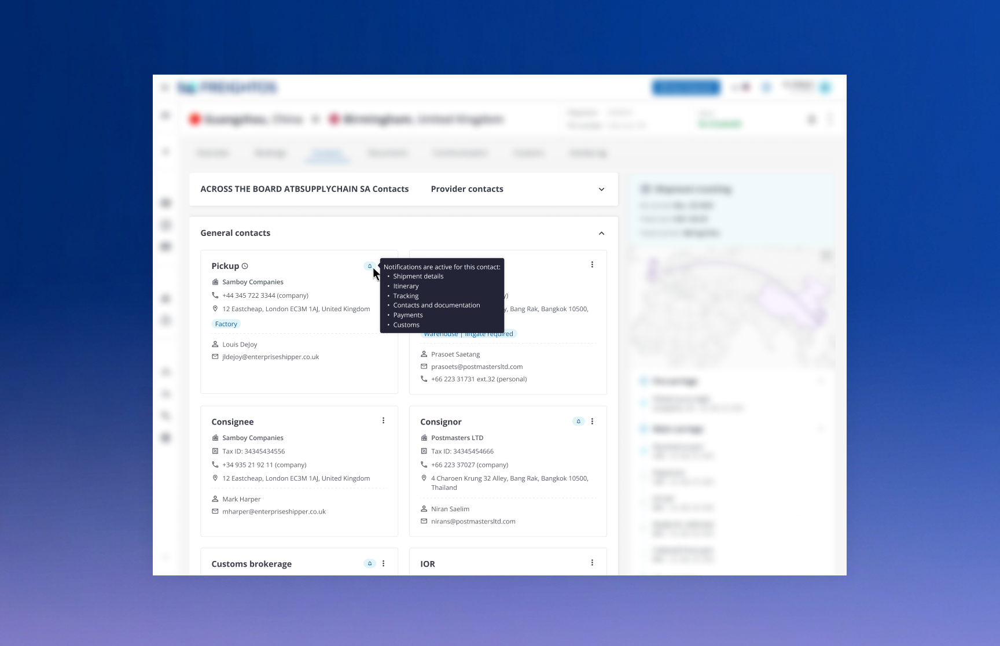
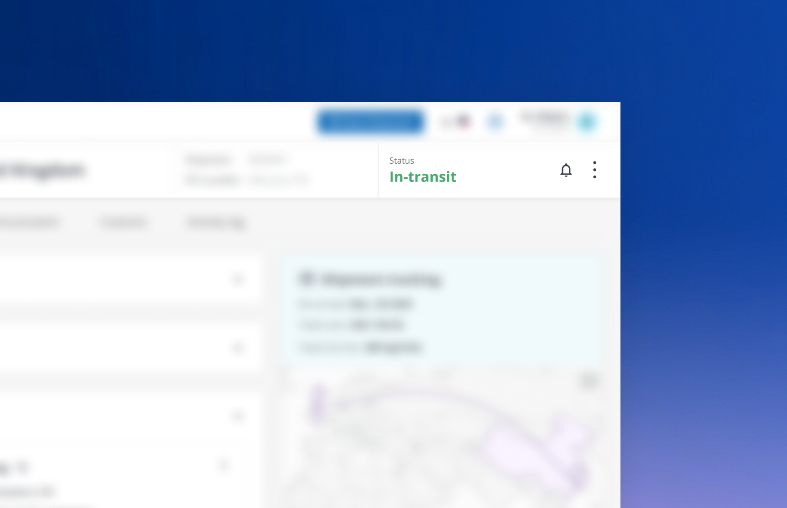
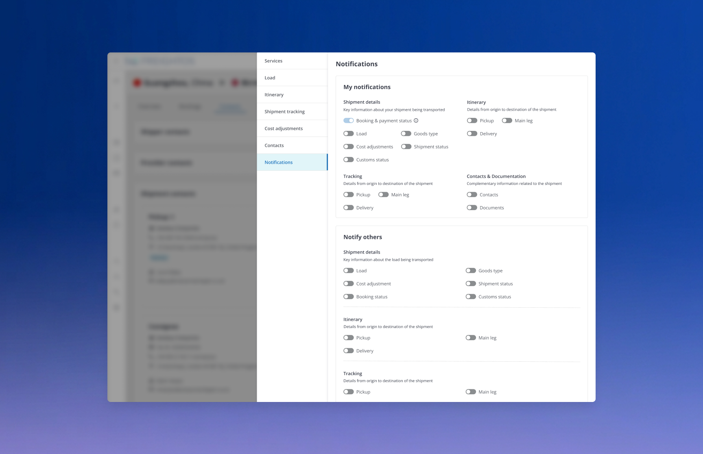

Notification System
Diseño de un sistema de notificaciones push para escritorio y email que avisa a los usuarios de las acciones relevantes que ocurren en la plataforma.
Rol
Product Designer
Cliente
[Nombre del cliente]
Año
2023
Equipo
PM, Ingeniería, Research



Por qué necesitábamos un nuevo enfoque
Contexto
En la plataforma ocurrían constantemente acciones relevantes para los usuarios — cambios de estado, mensajes, alertas — pero no existía ningún sistema centralizado para avisarles. La única vía era que el propio usuario entrara y comprobara manualmente si algo había cambiado.
Falta de visibilidad
Los usuarios debían refrescar manualmente la plataforma para enterarse de cambios importantes.
Canales desconectados
El email era la única vía de aviso, y no siempre reflejaba lo que ocurría dentro de la plataforma.
Riesgo de sobrecarga
Sin un sistema de prioridades, cualquier notificación futura corría el riesgo de saturar al usuario.
Cómo investigamos antes de diseñar las notificaciones
Entrevistas con usuarios y soporte
[Placeholder] Sesiones para entender qué tipo de eventos consideraban realmente urgentes los usuarios, y cuáles preferían recibir de forma más pausada.
Análisis de tickets de soporte
[Placeholder] Revisión de incidencias relacionadas con cambios importantes que los usuarios no habían visto a tiempo.
Benchmark de sistemas de notificaciones
[Placeholder] Estudio de cómo otras plataformas del sector gestionaban sus propios centros de notificaciones y alertas.
Técnicas de investigación
[Placeholder — antes de plantear una solución, explica aquí cómo se combinaron las entrevistas con el análisis de tickets de soporte para entender qué eventos merecían un aviso inmediato y cuáles no.]
[Placeholder — sustituye por una imagen real de la investigación 1]
[Placeholder — sustituye por una imagen real de la investigación 2]
[Placeholder — sustituye por una imagen real de la investigación 3]
[Placeholder — sustituye por una imagen real de la investigación 4]
[Placeholder] Resultados de las entrevistas y del análisis de tickets de soporte.
Workshops con equipos internos
[Placeholder — describe aquí los workshops con soporte, PM e ingeniería que sirvieron para definir las reglas de prioridad y los canales de notificación: cuánto duraron, quién participó y qué se decidió en conjunto.]
[Placeholder — sustituye por una imagen real del workshop 1]
[Placeholder — sustituye por una imagen real del workshop 2]
[Placeholder — sustituye por una imagen real del workshop 3]
[Placeholder — sustituye por una imagen real del workshop 4]
[Placeholder — sustituye por una imagen real del workshop 5]
[Placeholder] Workshops presenciales con los equipos internos de soporte, PM e ingeniería.
De los primeros bocetos a las primeras interacciones
Enfoque
[Placeholder — antes de lanzarnos a los primeros bocetos, explica aquí qué otros sistemas de notificaciones se estudiaron como referencia: qué patrones de priorización, agrupación y canales ya existían en el mercado.]
[Placeholder — sustituye por una imagen real de los primeros bocetos 1]
[Placeholder — sustituye por una imagen real de los primeros bocetos 2]
[Placeholder — sustituye por una imagen real de los primeros bocetos 3]
[Placeholder — sustituye por una imagen real de los primeros bocetos 4]
[Placeholder] Primeros bocetos del sistema de notificaciones y benchmark de referencias del mercado.
Centro de notificaciones
[Placeholder — describe aquí cómo se diseñó el panel persistente de escritorio: qué información se mostraba por notificación, cómo se agrupaban los eventos y cómo se marcaban como leídos.]
[Placeholder — sustituye por una imagen real del centro de notificaciones 1]
[Placeholder — sustituye por una imagen real del centro de notificaciones 2]
[Placeholder — sustituye por una imagen real del centro de notificaciones 3]
[Placeholder] Referencias del centro de notificaciones y su solución final.
Notificación push
[Placeholder — describe aquí cómo se diseñó el aviso push en tiempo real: cómo aparecía en pantalla, cuánto tiempo permanecía visible y qué pasaba al hacer clic sobre él.]
[Placeholder — sustituye por una imagen real de la notificación push 1]
[Placeholder — sustituye por una imagen real de la notificación push 2]
[Placeholder — sustituye por una imagen real de la notificación push 3]
[Placeholder — sustituye por una imagen real de la notificación push 4]
[Placeholder] Referencias del comportamiento de la notificación push.
Preferencias de notificación
[Placeholder — describe aquí la propuesta final de la pantalla de preferencias: qué eventos podía activar o desactivar el usuario por canal, y qué validaciones se hicieron con los equipos de producto.]
[Placeholder — sustituye por una imagen real de las preferencias de notificación 1]
[Placeholder — sustituye por una imagen real de las preferencias de notificación 2]
[Placeholder — sustituye por una imagen real de las preferencias de notificación 3]
[Placeholder] Referencias de la propuesta final de preferencias de notificación.
Cómo tomó forma la interacción final
Del boceto al prototipo
[Placeholder — con las reglas de prioridad ya validadas, explica aquí cómo se construyeron los prototipos interactivos de alta fidelidad: qué herramientas se usaron, cuántas iteraciones hubo y qué cambió respecto a los primeros borradores.]
Valoración del equipo
[Placeholder — resume aquí cómo se presentaron los prototipos al equipo, qué feedback se recogió de PMs, ingeniería y soporte, y qué decisiones de diseño cambiaron a raíz de esas valoraciones antes de dar el sistema por cerrado.]
Dos canales, con reglas de prioridad claras
Enfoque
[Placeholder] En vez de enviar cualquier evento por cualquier canal, diseñamos un sistema con dos canales — escritorio y email — y reglas de prioridad, para que cada acción llegara al usuario de la forma más adecuada según su urgencia.
Funcionalidades
entregadas
-
01
Centro de notificaciones en escritorio
[Placeholder] Panel persistente con historial de eventos y estados de lectura.
-
02
Notificaciones push en tiempo real
[Placeholder] Avisos inmediatos para las acciones más urgentes, visibles al instante.
-
03
Resumen configurable por email
[Placeholder] Digest periódico para las acciones menos urgentes, con preferencias por usuario.
Resultados
- [Placeholder] Los usuarios empezaron a reaccionar a eventos importantes sin necesidad de refrescar la plataforma.
- [Placeholder] El tiempo de respuesta ante acciones urgentes se redujo de forma notable.
- [Placeholder] Las quejas por falta de visibilidad sobre cambios en la plataforma disminuyeron de forma sostenida.
La funcionalidad en profundidad
El centro de notificaciones, en profundidad
Cómo diseñamos un sistema de prioridades que el propio usuario pudiera controlar
Contexto y problema
[Placeholder — explica aquí la parte más difícil del diseño: cómo decidir qué eventos merecen una notificación inmediata y cuáles pueden esperar, sin que la decisión final recaiga solo en el equipo de producto.]
"[Placeholder — sustituye esta cita por un testimonio real de un usuario o stakeholder del proyecto.]"
— [Cargo, empresa — placeholder]
Proceso
[Placeholder — resume aquí cómo validaste los niveles de prioridad y las preferencias de notificación con usuarios reales, y qué cambió a raíz de ese feedback.]
Detrás de
escena
-
01
[Placeholder] Ocurre una acción relevante en la plataforma para el usuario.
-
02
[Placeholder] El sistema evalúa la prioridad del evento según reglas configurables.
-
03
[Placeholder] El usuario recibe el aviso por el canal correspondiente: push inmediato o resumen por email.
-
04
[Placeholder] El usuario puede ajustar sus preferencias de notificación en cualquier momento.
Resultados
XX%
Más rapidez de respuesta
[Placeholder descripción]
XX%
Adopción del centro de notificaciones
[Placeholder descripción]
XX%
Menos tickets de soporte
[Placeholder descripción]
[Placeholder — cierra esta sección con una reflexión breve sobre lo que hizo funcionar este sistema en concreto.]
Qué me dejó este proyecto
[Placeholder — comparte una o dos lecciones honestas del proyecto: algo que aprendiste sobre diseñar sistemas de prioridad, o sobre el equilibrio entre mantener informado al usuario y no saturarlo.]
Has llegado al final
Gracias por leer. ¿Quieres ver más?